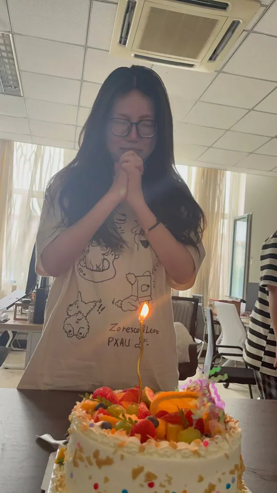
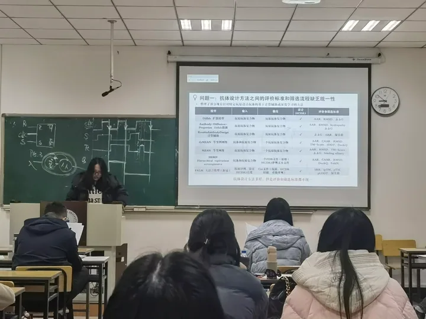
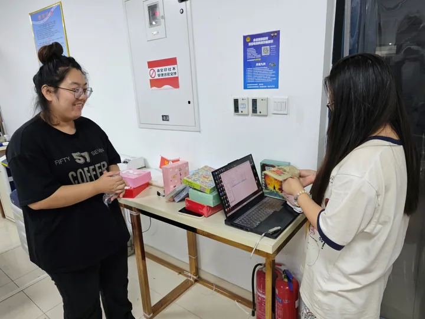

Generative model
DynoM ↗
A conditional diffusion model for exploring protein conformational ensembles, with native support for multi-chain inputs.
Ren Protein Design Group
— Zilin Ren · Group Leader
We develop computational methods, models, and datasets to understand protein motion, evaluate molecular interactions, and optimize biological sequences.
Explore our research, meet our group, and build on our open code and data.
Models, data, and tools from our group.
A conditional diffusion model for exploring protein conformational ensembles, with native support for multi-chain inputs.
Molecular dynamics ensembles
An antibody binding unified scoring framework for evaluating antigen–antibody interfaces and screening AI-designed antibodies.
A BERT-based architecture tailored for codon optimization using the cross-attention mechanism.
Conversations, conferences, and moments together.


Research directions, people, publications, and public code and data resources, together in one place.
All group newsProteins occupy ensembles of conformations. Our public resources use molecular simulations and generative modeling to explore this structural flexibility.
 Model architectureView larger ↗
Model architectureView larger ↗ABUS integrates geometric and physicochemical interface features in a deep learning framework for antigen–antibody interface scoring. The repository includes preprocessing, inference, and training utilities for evaluating candidate complex structures.
Explore ABUS ↗ Model architectureView larger ↗
Model architectureView larger ↗CodonBERT uses a BERT-based architecture and cross-attention to model codon preferences. Its public implementation supports codon optimization and model training.
Explore CodonBERT ↗ Model architectureView larger ↗
Model architectureView larger ↗Individual profiles will be added here. Meet our group in the photograph below.









No photographs in this category yet.
Zilin Ren et al. · Bioinformatics, Volume 40, Issue 7, btae330.
DOI: 10.1093/bioinformatics/btae330
For project-specific references and citation instructions, please consult the corresponding repository README.
RPDGroup's website brings together our research directions, team photo, selected publication, and public code and data resources.
Explore our resources →Ren Protein Design Group develops computational methods, models, and datasets to study and design proteins. Our public work spans molecular dynamics, conformational ensemble modeling, antibody interface evaluation, and codon optimization.
We share code and workflows through our GitHub organization. Each project provides its own installation instructions, examples, access information, licensing, and citation guidance.
Discover our research →
For installation help, reproducibility questions, or feedback on a model or dataset, open an issue in the corresponding project repository.
Find a project →Visit our GitHub organization for public projects and their discussion channels. Project-specific collaboration inquiries can be raised through the relevant repository.
RPDGroup on GitHub ↗Conditional diffusion modeling of protein conformational ensembles with multi-chain inputs.
Small-protein molecular dynamics ensembles and associated simulation and analysis workflows.
Preprocessing, inference, and training tools for antigen–antibody interface scoring.
A BERT-based cross-attention architecture for codon optimization.
Try a different keyword or clear the filters.
Check the license and citation guidance for each resource before use. Model and dataset access requirements are documented by the respective projects.